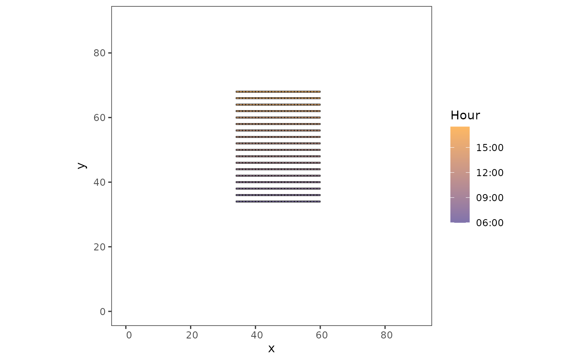
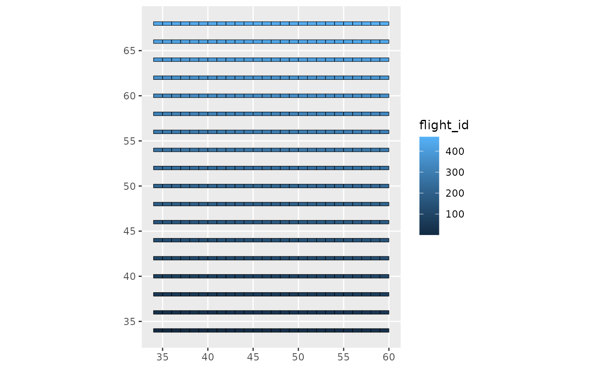
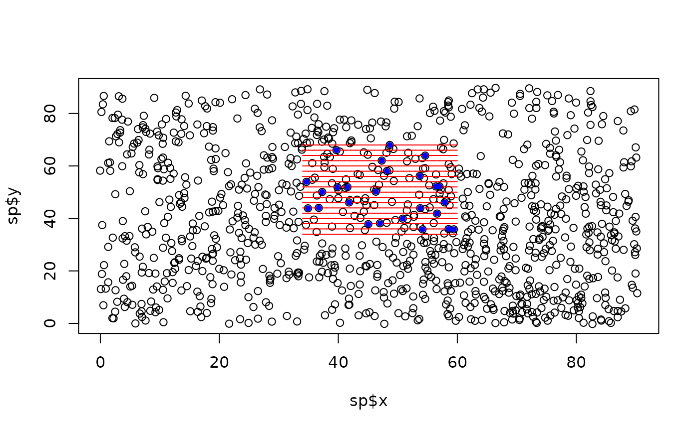
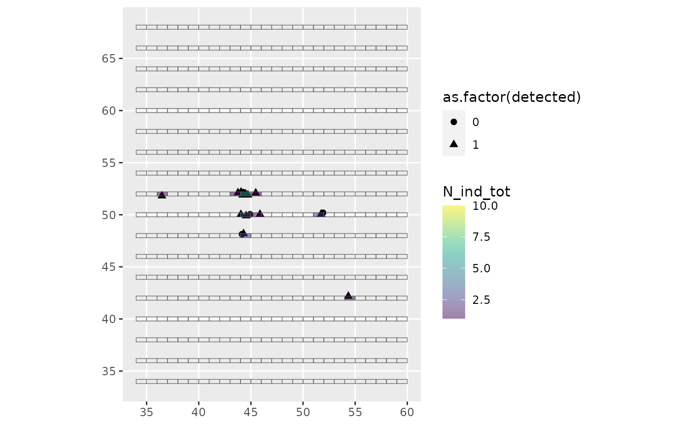

Simulate survey
simulate-survey.Rmd
library(simtools)1. Generate a transect design
This design can be done with the dssd package when working on real-world examples.
The generate_survey_plan() function presented here
provide facilities to build a simple layout. The built layout will
consist of parallel transects covering a given area in the virtual
environment, spaced out by a given distance and segmented by a given
length. The layout can either be horizontal (the default) or vertical.
The design can be generated in virtual or real space, but in the latter
case, be cautious about the units (you should work with projected
coordinates).
surv <- generate_survey_plan(bbx_xmin = 30, bbx_xmax = 65, bbx_ymin = 30, bbx_ymax = 65,
start_x = 34, end_x = 60, start_y = 34, end_y = 68,
space_out_factor = 2, segmentize = TRUE, seg_length = 1,
buffer = TRUE, buffer_width = 0.2)
par(mfrow = c(2,2), mar = c(2.5,2.5,4,0.5))
raster::plot(surv$bbx, axes = TRUE, main = "bounding box")
plot(sf::st_geometry(surv$transects), axes = TRUE, main = "transects")
plot(sf::st_geometry(surv$segments), axes = TRUE, main = "segments")
plot(sf::st_geometry(surv$buffered_segments), axes = TRUE, main = "buffered seg")2. Assign a flight plan to the survey
Before launching a survey, a flight plan must be set up, that is the
order by which segments will be surveyed must be chosen. This is done
with assign_flight_plan(), which gets a segment objects
(buffered segments from above), a vector providing the order by which
segment table rows will be surveyed, the survey starting date and time,
the speed of the aircraft (from which is calculated the survey duration
of a single segment) and the duration of the transit period between two
successive transects. The function automatically adds a one-second gap
between two consecutive segments to avoid overlapping periods.
surv <- generate_survey_plan(bbx_xmin = 30, bbx_xmax = 65, bbx_ymin = 30, bbx_ymax = 65,
start_x = 34, end_x = 60, start_y = 34, end_y = 68,
space_out_factor = 2, segmentize = TRUE, seg_length = 1,
buffer = TRUE, buffer_width = 0.2
)
# assign the time periods to each segment
flight_plan <- assign_flight_plan(
sf_segments = surv$buffered_segments,
flight_id = c(1:468),
col_trans_id = "transect",
flight_day = "2022-08-01",
survey_start_hour = "06:00:00",
flight_speed = 160,
intertransect_gap_duration = 60*30
)
# plot to check everything is ok
library(ggplot2)
ggplot(flight_plan) +
geom_sf(aes(fill = start_time),
color = "black", size = 0.2) +
scale_fill_datetime(low = "#8073ac", high = "#fdb863") +
theme_bw() + theme(panel.grid = element_blank()) +
labs(fill = "Hour", limits = c("06:00", "16:16"), x = "x", y = "y")+
coord_sf(xlim = c(0,90), ylim = c(0,90))

3. Simulate survey on fixed individual
The detection_process() function can be used to simulate
the detection process when the surveyed individuals are fixed on the
geographical space, for example when the species distribution is
generated by simul_spat(). If strip_transect is emulated,
an individual is considered detected if its distance to the track line
is lower than the width (provided with sigma). If line-transect is
emulated, a half-normal detection function is built using the given
sigma as effective strip half-width. The user must define if the
simulation is done in a virtual space or not (if not, the distances must
be provided in km and pts and transects objects must be projected).
grid <- create_grid()
env <- generate_env_layer(grid = grid)
#> [using unconditional Gaussian simulation]
sp <- suppressWarnings(simul_spat(ref_map = env$rasters$sim1,
N = 1000,
n_sim = 1,
return_wgs_coordinates = FALSE))
pts <- detection_process(pts = sp,
transects = example_data$survey$segments,
strip_transect = TRUE,
sigma = 0.2,
virtual_space = TRUE,
seg_id_col = "seg_id")
#> Strip-transect is used with a width of 0.2
plot(sp$x, sp$y)
plot(sf::st_geometry(example_data$survey$segments), col = "red", add = TRUE)
points(sf::st_drop_geometry(pts[which(pts$detected == 1), c("x", "y")]),
pch = 20, col = "blue")
4. Simulate survey on moving individuals
Once we have the movements of a population on one hand, and a survey
design with time periods assigned on the other hand, we can match the
two to simulate the conduction of an observation survey. This is what is
done by the launch_survey_on_movement() function,
scrutinizing whether movement bouts temporally matching segments are
included within them. If yes, and the centroid of the movement bout is
included in the segment, the individual is considered as sighted by the
survey. This default strip-transect protocol can be changed to
line-transect protocol, in which case a distance-dependent detection
probability is additionally computed for each individual as to defined
whether or not they are detected during the survey.
For the survey to be relevant, the size of the buffer around the
segments must be carefully chosen in generate_survey_plan()
as to mimic the maximum distance to the track line considered possible
during a survey (e.g. 200 m for a strip-transect survey; 1 km for a
line-transect survey).
Note: there must not be a too large difference between the size of segments and that of movement bouts. Because the function simplifies the movement bouts to their centroids, movement bouts should be on the same time scale as the segments (seconds). Otherwise, the position approximated to define if the individual is sighted or not (i.e., the center of the movement bout) may not be representative of the movement of the individual.
# an example with a small number of individuals
survey <- launch_survey_on_movement(
survey_data_buffered = example_data$flight_plan,
survey_data_linear = example_data$survey$segments,
traj_data = example_data$mvmt_data,
line_transect = TRUE, detection_function = "hn",
sigma = 0.2
)
#> Applying detection function
# look at the number of sightings
summary(survey$effort_table$N_ind_tot)
#> Min. 1st Qu. Median Mean 3rd Qu. Max.
#> 0.00000 0.00000 0.00000 0.03846 0.00000 6.00000
plot(sf::st_drop_geometry(survey$obs_table[, c("dist_seg", "prob_dist")]),
xlab = "distance to the track line", ylab = "detection probability")
# all sightings are in a few segments
library(ggplot2)
ggplot(survey$effort_table) +
geom_sf(data = survey$obs_table,
aes(shape = as.factor(detected)), size = 2) +
geom_sf(aes(fill = N_ind_tot)) +
viridis::scale_fill_viridis(limits = c(1,10),
na.value = NA, alpha = 0.5)